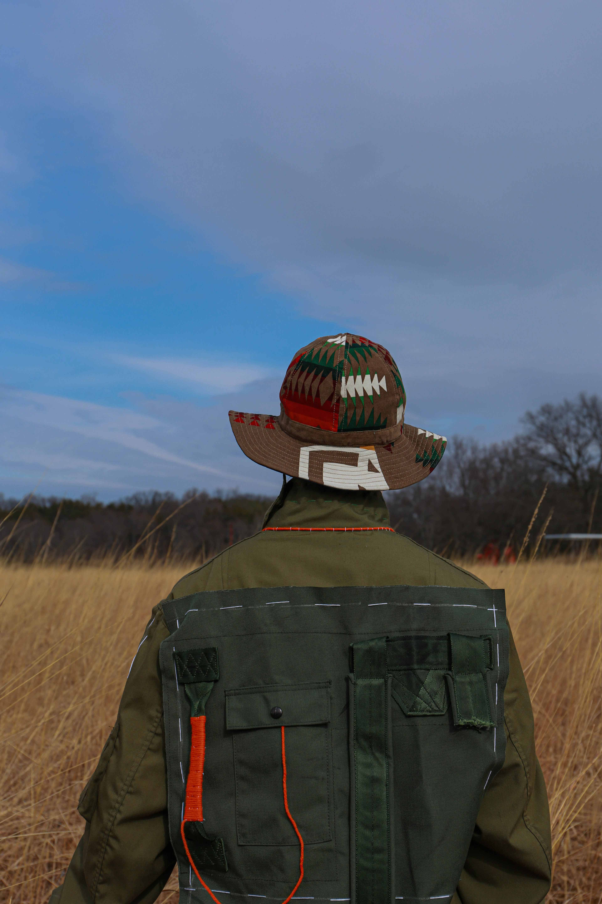
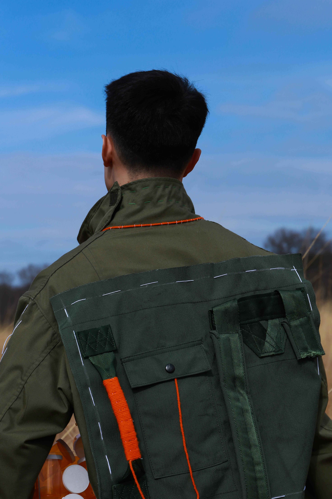
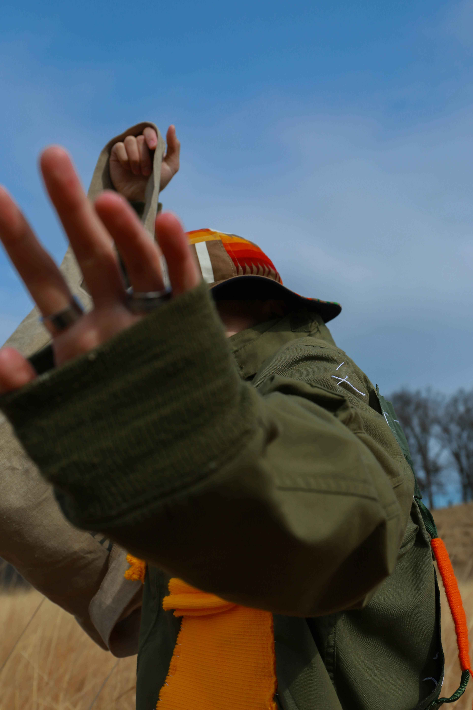
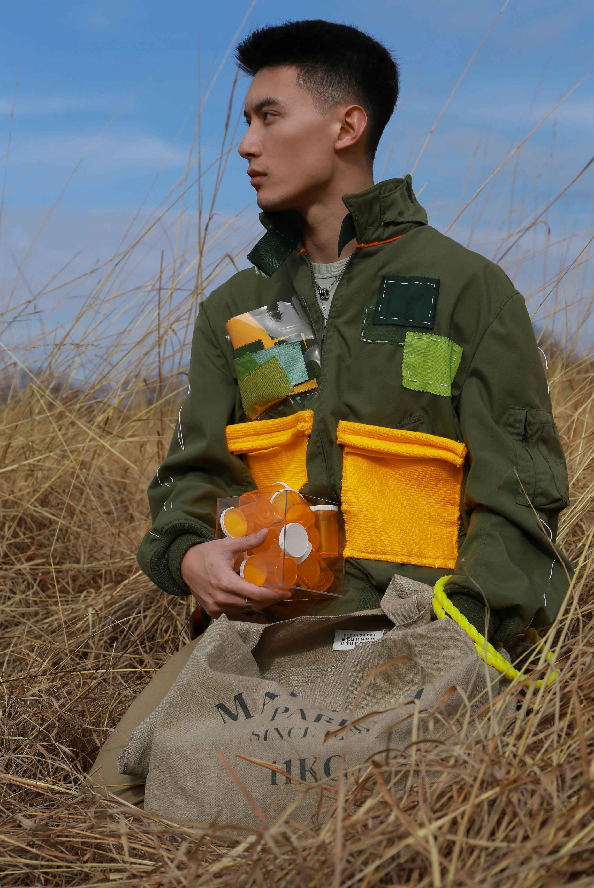
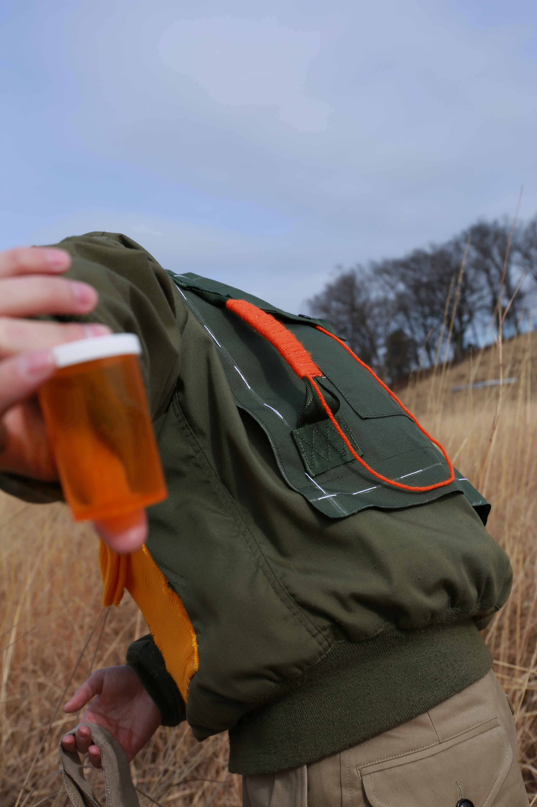

Old Cloth Upcycle
Project Intro:
In this project, I created a new garment that was upcycled and improved
from old clothes. I spent a whole day in Brooklyn, looking for some vintage pie-
ces that may inspire me. Coincidently, I burst into a military store, and picked a
bag, a military jacket, because when I looked at those old pieces, I was thinki-
ng about my grandfather and the military stories that he told me when I was
very young. Miltary style is always a solemn topic for me, since I feel there is
a really strong connection between me and my grandfather. So, with no hesitat-
ion, I was going to that direction.
.




